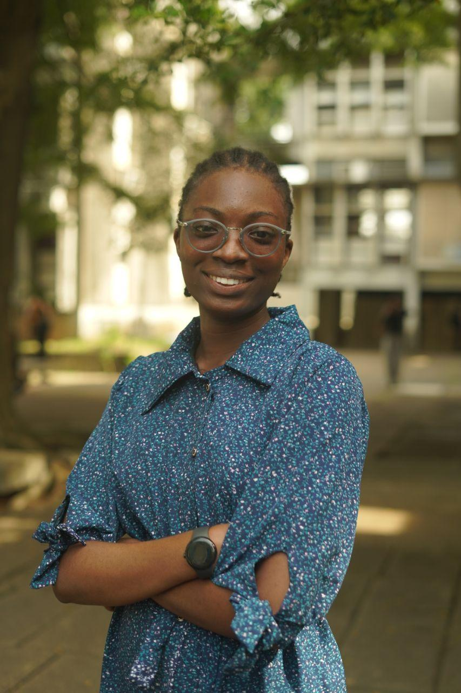
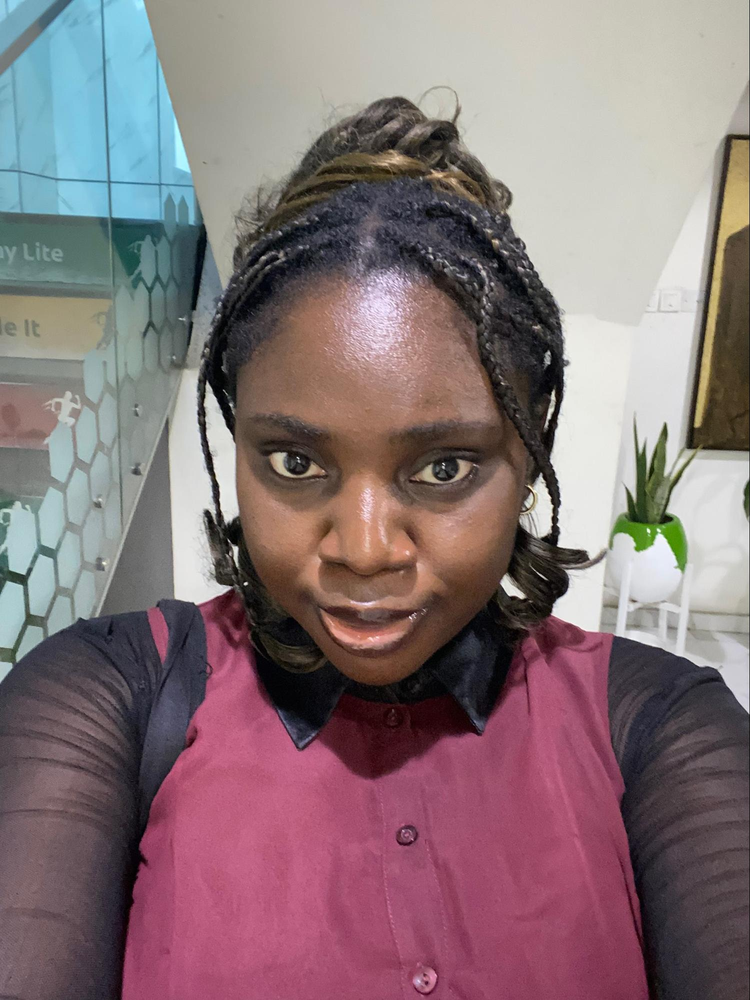
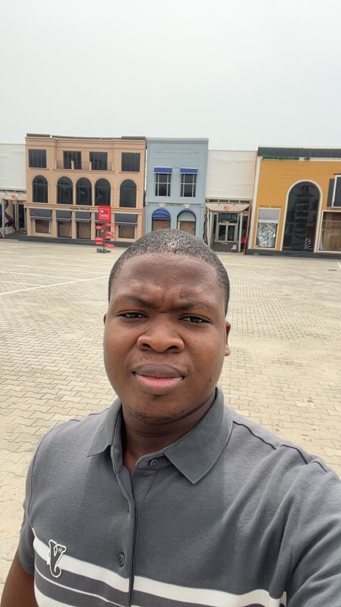
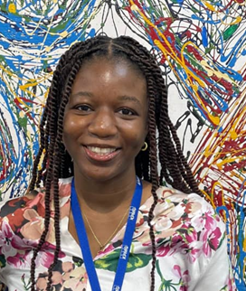
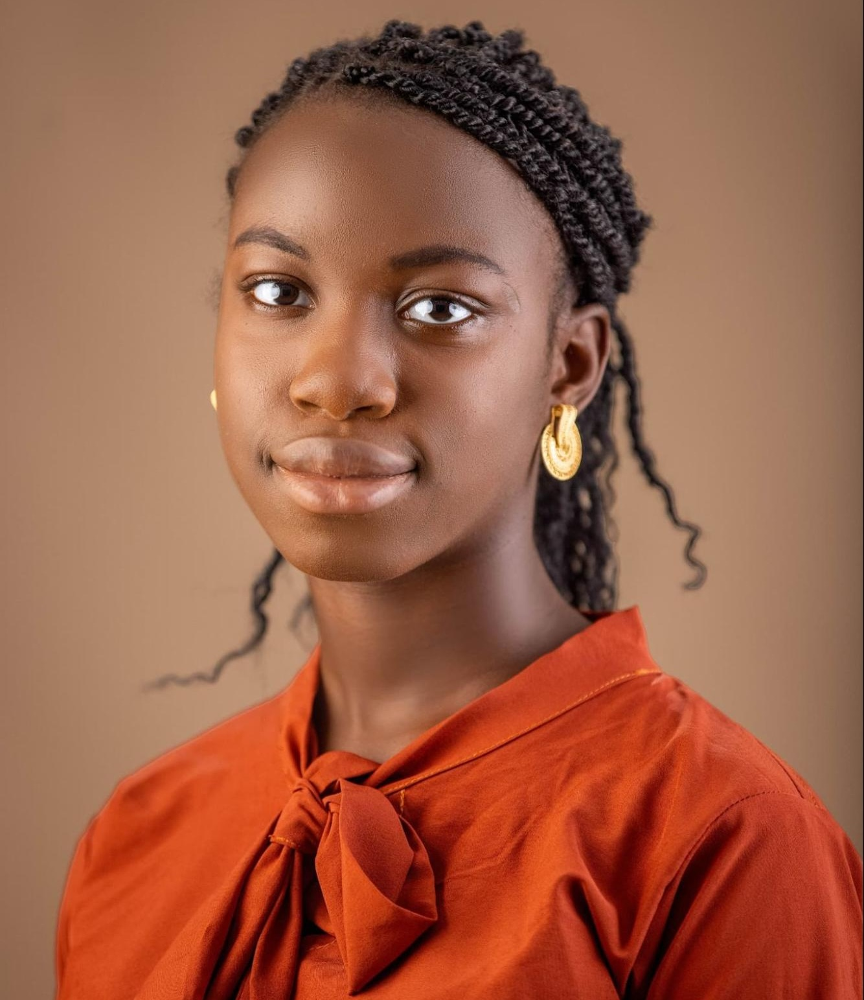

Chisom Chibuike
ML Collective · University of Nigeria
ML Collective · University of Nigeria

University of the Witwatersrand
ML Collective · Ekiti State University
Intron Health
ML Collective
Carnegie Mellon University · Amazon Bedrock
Ohio State University
ML Collective
Google DeepMind
OpenAI
Independent Researcher

Independent Researcher
—
Independent Researcher

ML Collective · University of Lagos
Carnegie Mellon University, Africa
—
Independent Researcher

Independent Researcher

Independent Researcher
—
ML Collective · FUNAAB